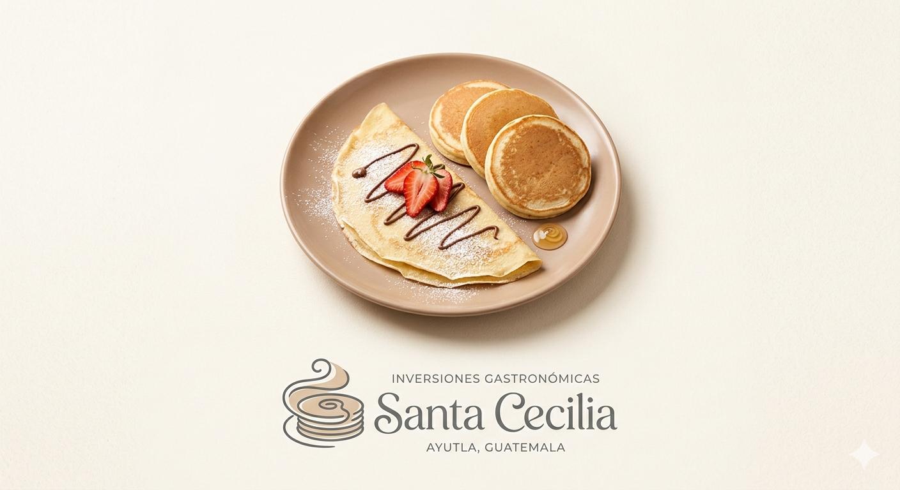

Bienvenidos a Santa Cecilia. |
|
Es un honor recibirte en Santa Cecilia. Para nosotros, la comida es el lenguaje de la convivencia, y nuestro compromiso es que cada bocado te brinde un momento de alegría. Bienvenido a un espacio donde la calidad de los ingredientes y el esmero en la preparación son nuestra mejor carta de presentación. ¡Buen provecho! |
|---|
Presentacion |
Inversiones Gastronómicas Santa Cecilia es una empresa guatemalteca emergente, dedicada a la elaboración y comercialización de platillos de repostería artesanal y comida ligera. Fundada en el municipio de Ayutla, nuestra organización se distingue por combinar recetas tradicionales con un modelo de gestión joven, dinámico y altamente eficiente, enfocado en satisfacer el paladar de la comunidad de San Marcos. |
|  |
| |